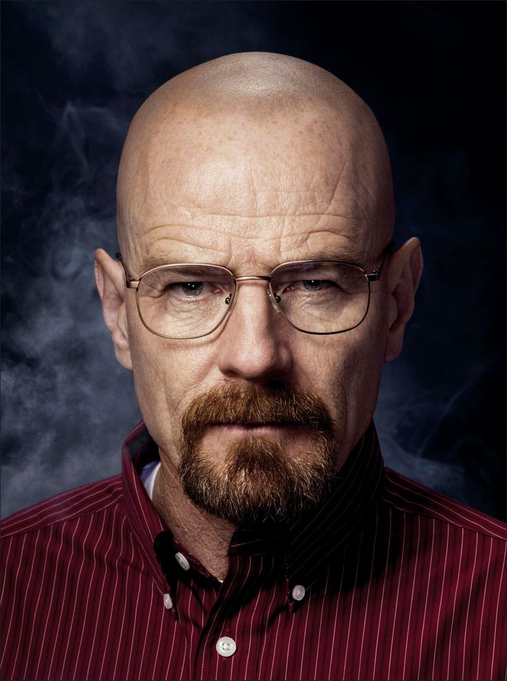
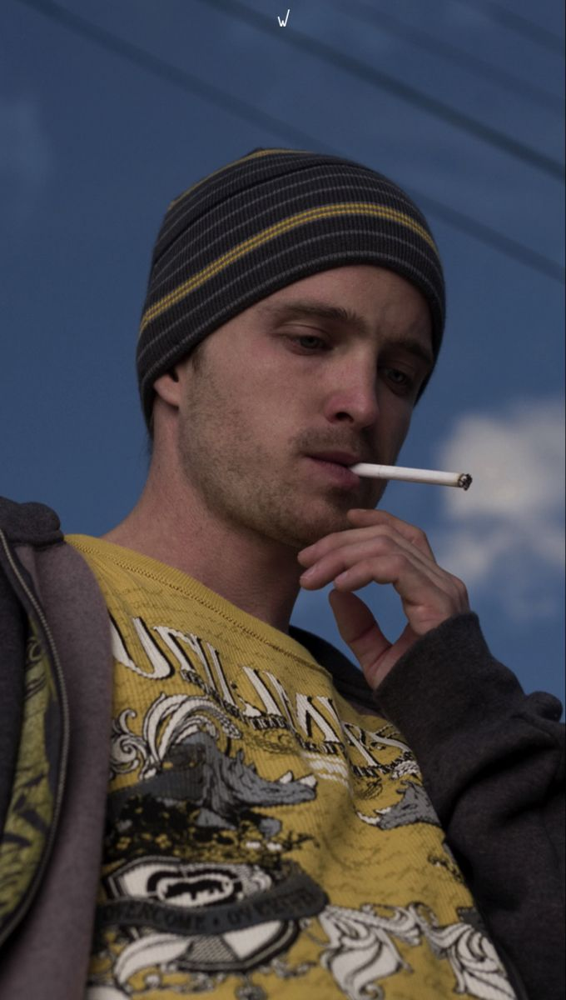
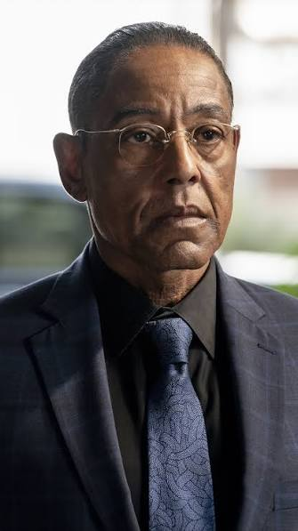
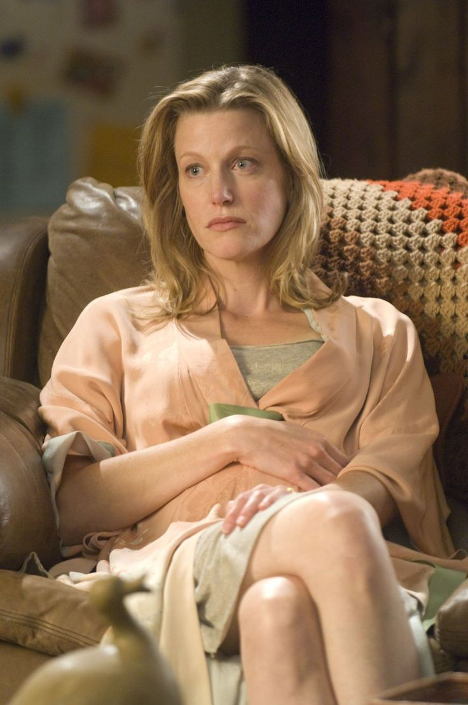
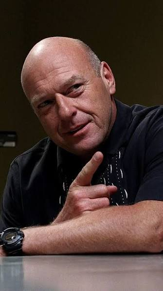
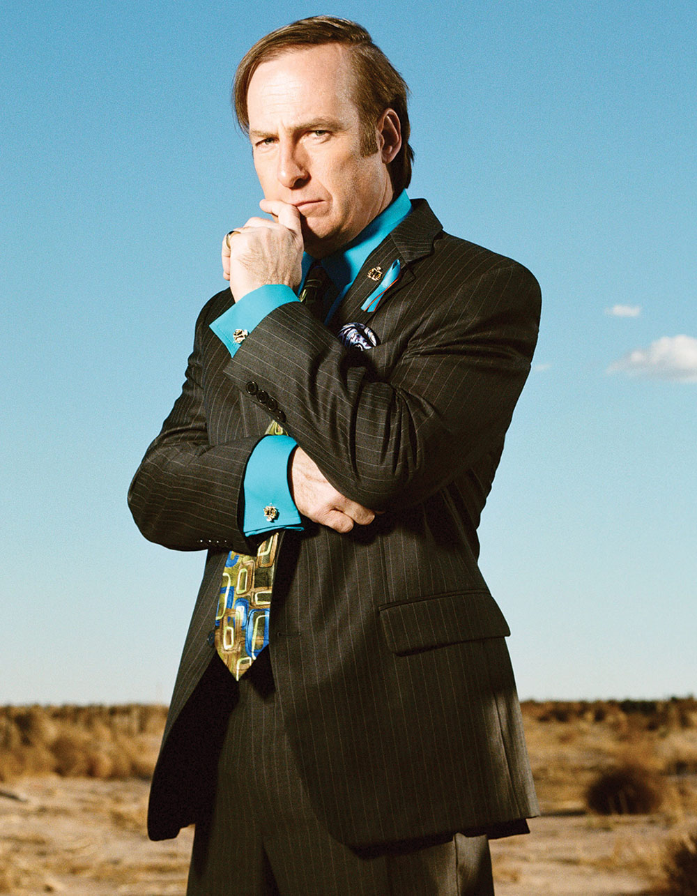

Walter White

Interpretado por Bryan Cranston. Es un profesor de química que lleva una vida aparentemente tranquila junto a su familia. Después de recibir un diagnóstico de cáncer, decide utilizar sus conocimientos científicos para comenzar a fabricar metanfetamina junto a Jesse Pinkman. A medida que avanza la historia, sus decisiones lo llevan cada vez más profundo dentro del mundo criminal.
Jesse Pinkman

Interpretado por Aaron Paul. Es un antiguo alumno de Walter White y uno de los principales protagonistas de la serie. Comienza trabajando junto a Walter en la fabricación de metanfetamina y, aunque inicialmente tiene experiencia en el mundo de las drogas, su relación con Walter se vuelve cada vez más compleja. Jesse se enfrenta constantemente a las consecuencias de sus decisiones y a los conflictos que surgen dentro del negocio.
Gustavo Fring

Interpretado por Giancarlo Esposito. Es un empresario que mantiene una imagen pública respetable mientras dirige una importante organización dedicada al tráfico de drogas. Es conocido por su comportamiento calculador y por mantener un estricto control sobre sus operaciones. Su relación con Walter y Jesse se transforma progresivamente en uno de los principales conflictos de la serie.
Skyler White

Interpretada por Anna Gunn. Es la esposa de Walter White y madre de sus hijos. Al principio desconoce las verdaderas actividades de su marido, pero poco a poco comienza a descubrir que Walter lleva una vida muy diferente a la que aparenta. A medida que conoce la dimensión de sus acciones, debe enfrentarse a las consecuencias que estas tienen sobre su familia.
Hank Schrader

Interpretado por Dean Norris. Es un agente de la DEA especializado en la investigación del narcotráfico y cuñado de Walter White. Tiene una personalidad segura y suele mostrarse decidido frente a los criminales que investiga. Su trabajo lo lleva a investigar el tráfico de metanfetamina en Albuquerque, acercándose progresivamente a una verdad que está mucho más cerca de su propia familia de lo que imagina.
Saul Goodman

Interpretado por Bob Odenkirk. Es un abogado especializado en defender a personas involucradas en actividades criminales. Utiliza su conocimiento de la ley, sus contactos y diferentes estrategias para ayudar a sus clientes a resolver situaciones complicadas. Su relación con Walter y Jesse comienza cuando estos necesitan asesoramiento legal y rápidamente se convierte en una pieza importante dentro de sus actividades.